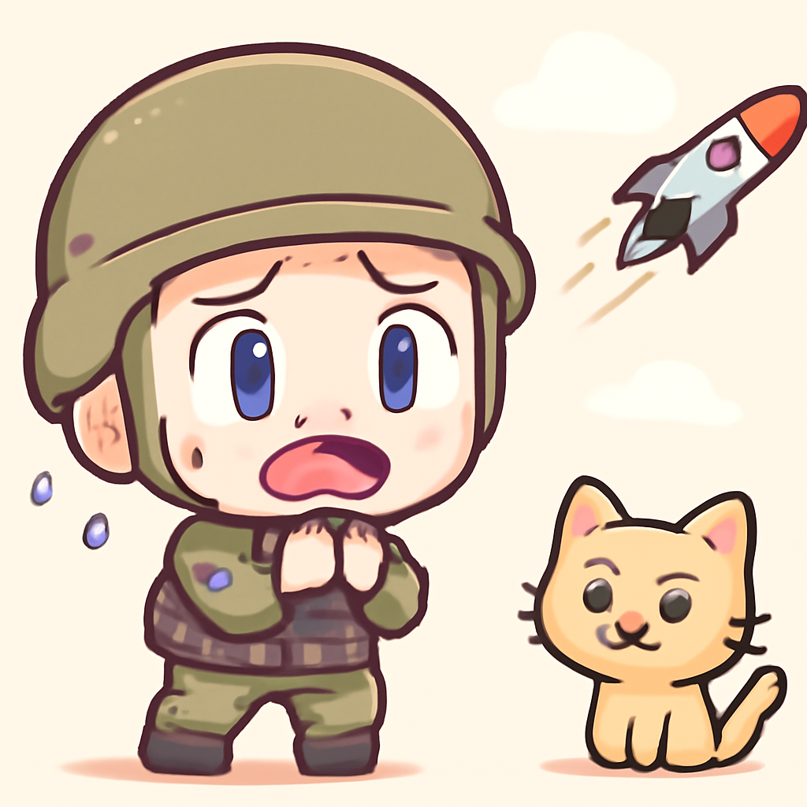
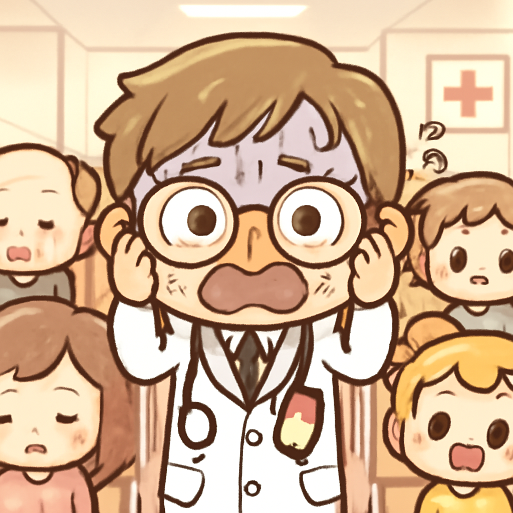
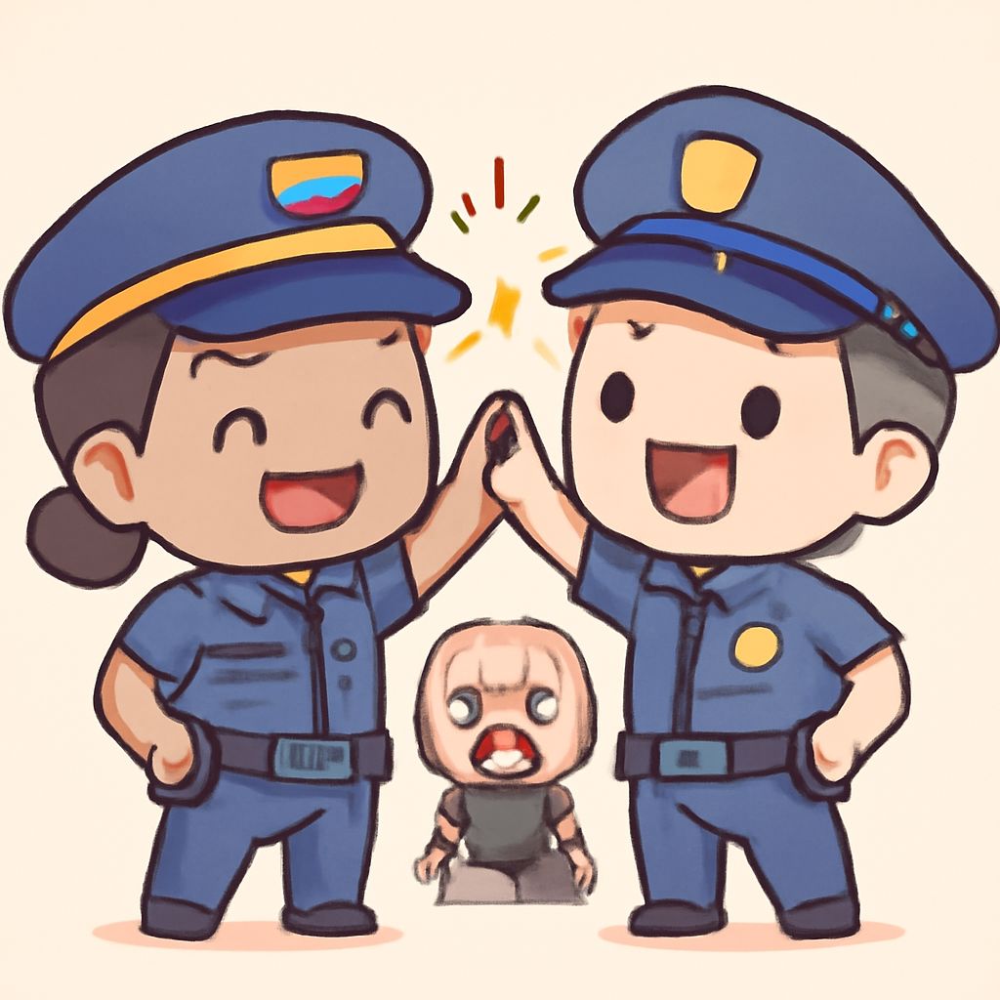

其一 · 伊朗 · 特朗普宣稱和平協議將簽署
美國總統特朗普說本週日將簽署伊朗和平協議。
美國華府，特朗普日前表示將於本週日與伊朗簽署和平協議，但伊朗方面卻表示時間尚未確定，甚至還說「明天不會簽」。這個協議若能實現，可能會改變中東局勢，但目前的狀況顯示，雙方還有不少溝通上的障礙。看來，協議的簽署時間可能要再等一等。
🔗 原始新聞 ↗
2026-06-14 · 以古觀今，以笑抗愁
美國總統特朗普說本週日將簽署伊朗和平協議。
美國華府，特朗普日前表示將於本週日與伊朗簽署和平協議，但伊朗方面卻表示時間尚未確定，甚至還說「明天不會簽」。這個協議若能實現，可能會改變中東局勢，但目前的狀況顯示，雙方還有不少溝通上的障礙。看來，協議的簽署時間可能要再等一等。
🔗 原始新聞 ↗
烏克蘭面臨彈道導彈威脅，急需美國增援。

烏克蘭現在正在呼籲美國提供更多的愛國者防空系統，因為他們的庫存正在耗盡，面對俄羅斯的導彈威脅，這感覺就像在和一隻巨型的貓咪打架，卻沒有足夠的防禦。這不僅是烏克蘭的安全問題，也關乎整個歐洲的穩定，未來局勢將更加緊張。希望貓咪能乖一點。
🔗 原始新聞 ↗
德國面臨疫苗接種率低的挑戰，醫療系統不堪重負。

德國正在面對疫苗接種率低的挑戰，尤其是在青少年中，這使得醫療系統承受著越來越大的壓力。當醫院像高峰時期一樣擠滿了病人，醫務人員的心情可想而知——就像是在一場沒有幸運輪的賭博中。這個問題如果不解決，將影響整個社會的健康和安全。
🔗 原始新聞 ↗
加拿大螢幕獎上，影視產業自信展現本土故事。
在剛結束的加拿大螢幕獎上，影視產業不再只是一個「好萊塢北方」，而是堅定地展示了自己獨特的故事。這不僅是對自我的認同，也是對國際影視界的一次挑戰。看來，加拿大的創作者們已經準備好大展身手，讓我們期待他們的作品！
🔗 原始新聞 ↗
委內瑞拉與美國合作，打擊犯罪組織。

在委內瑞拉，警方與美國合作進行了一次聯合行動，成功擊斃了被通緝的幫派首領。這一舉動不僅展示了兩國在打擊犯罪方面的合作，也反映出當地治安的嚴峻挑戰。希望未來能有更多的安全與和平，讓人們能安心過日子。
🔗 原始新聞 ↗